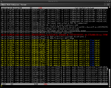
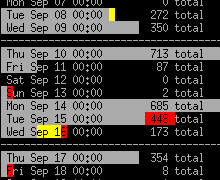

|  |  |
| The standard view of a syslog file. Log lines are displayed with highlights. Errors are red and warnings are yellow. | The histogram view of the same syslog file. The histogram shows the number of messages per time slice. |
The major features of lnav are:
Syslog, Apache access log, strace, tcsh history, and generic log files with timestamps. The file format is automatically detected when the file is read in.
Displays the number of log messages per bucket-of-time. Useful for getting an overview of what was happening over a long period of time.
Display only lines that match or do not match a set of regular expressions. Useful for removing extraneous log lines that you are not interested in.
Searches are done as you type; new log lines are automatically loaded and searched as they are added; filters apply to lines as they are loaded; and, SQL queries are checked for correctness as you type.
The log file view automatically scrolls down to follow new lines that are added to files. Simply scroll up to lock the view in place and then scroll down to the bottom to resume tailing.
The log lines from all the files are loaded and then sorted by time-of-day. Relieves you of having to manually line up log messages from different files.
Errors and warnings are colored in red and yellow, respectively. Highlights are also applied to: SQL keywords, XML tags, file and line numbers in Java backtraces, and quoted strings.
There are hotkeys for jumping to the next or previous error or warning and moving forward or backward by an amount of time.
Each log file line is treated as a row in a database that can be queried using SQL. The columns that are available depend on logs file types being viewed.
Your previously entered commands and searches are saved so you can access them between sessions.
Top bar: Displays the current time, the number of warnings and errors above the top line and the name of the file where the top line came from.
Main content: Displays the log lines in time sorted order and highlighted. Highlights are done for: errors, warnings, search terms, quoted strings, and some SQL syntax. On the far right, there is a proportional scroll bar displayed in reverse-video that shows the current position in the file.
Bottom bar: Displays the current line number, the position in the file as a percentage, warnings and errors below the bottom line.
Entry line: Searches and commands are entered here. The entry line supports tab-completion in most contexts and displays suggestions in the entry box. In this screenshot, the user is typing in a SQL query. The top shows an error message indicating that the SQL statement is incomplete. Queries and searches are automatically checked for correctness as you type. The screenshot also shows suggestions for SQL keywords and column names after the user hit the TAB key twice.
{kind=link}
{kind=link}